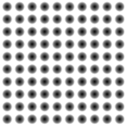

Image: Dimples Marble Brick Noise Metal
Bump Strength: 5 4 3 2 1 0 -1 -2 -3 -4 -5
Reset Rotation
Object: Cone Cube Cylinder Torus Sphere
Diffuse Color: White Pink Yellow Green Blue
Heightmap: 
Drag on the object to rotate it.